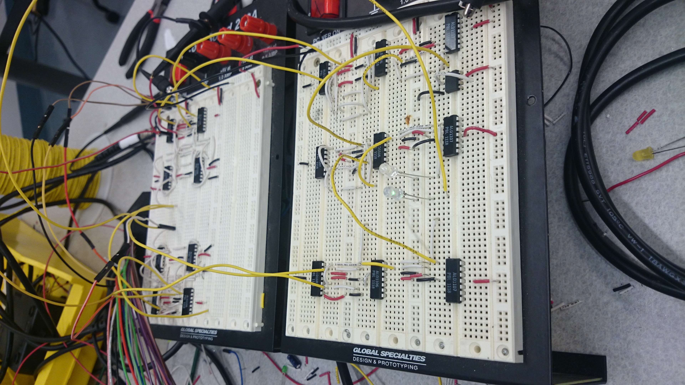

We made a full adder with 48 transistors from CMOS arrays (the ALD1106 and ALD1107).
Here's a video of it working.. (It wouldn't upload to YouTube, otherwise we'd embed it.)
To investigate propagation delay, we used an Analog Discovery to generate a square wave as one of the adder inputs. The carry-in bit was held low for this experiment, so the adder was essentially switching between its 0 and 1 states. The frequency was about 50kHz.
Since 0 to 5 volts is a large amplitude transition, we tried fitting a straight line to it (as in lab 9, where we measured the slew rate of a differential amplifier). It's not particularly straight, but our measured rate was about 4.17 million V/s.
It is interesting to note that the time constant when it was being pulled down was lower than when it was being pulled up. This happens in all CMOS gates because of the respective mobilities of the majority carriers in each device: electron mobility is about 2x greater than hole mobility.
In doing this project we had to create two XOR gates, which neither of us had seen in transistor form before. We made a brief video describing the pull up and pull down network for an XOR in terms of boolean logic, which can be found here.